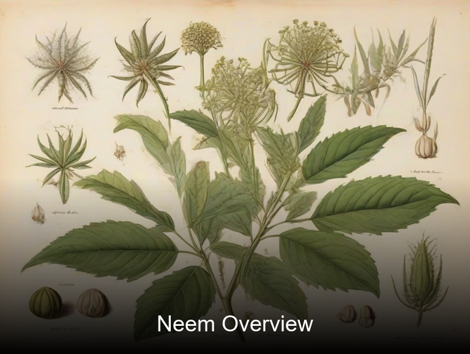
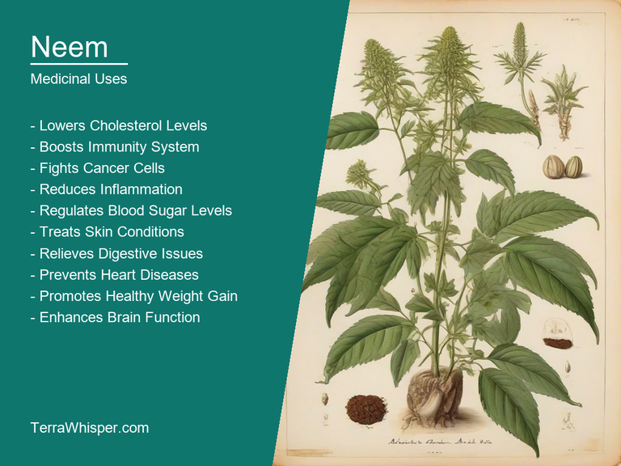
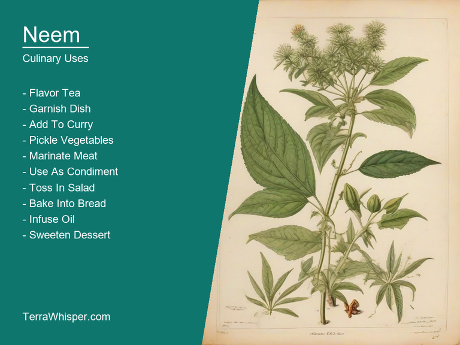
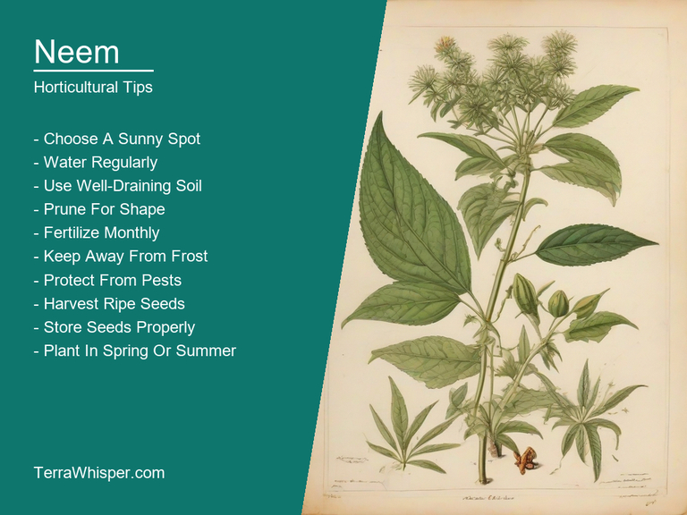
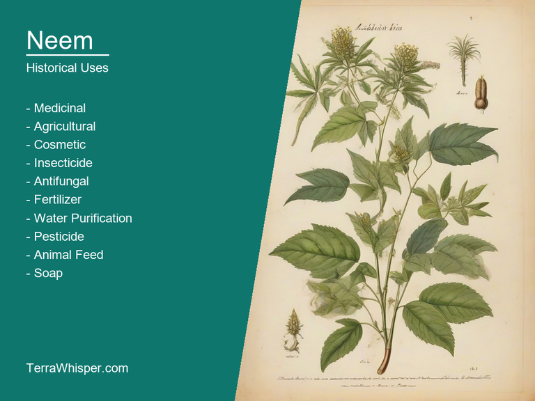

Neem, scientifically known as Azadirachta indica, is a versatile tree with many applications in medicine, cooking, gardening, and history. Native to India and Pakistan, it has been used for centuries due to its wide range of properties.
Medicinally, the leaves, fruits, seeds, and bark of neem have been utilized in traditional Indian Ayurvedic medicine as well as other forms of natural healthcare worldwide. The plant is known for its anti-inflammatory, antiviral, antibacterial, antifungal, and antioxidant properties, making it a powerful agent against various ailments. Additionally, neem has been studied to have potential applications in treating diabetes, high cholesterol, skin conditions like acne or psoriasis, and even some forms of cancer.
Culinary-wise, neem is often used as an ingredient due to its strong flavors which can be both bitter and astringent. In India, for example, the leaves are commonly used in cooking, particularly in curries or vegetable dishes. Moreover, the seeds are sometimes ground into paste form and mixed with hot oil before being applied topically on the skin as a natural remedy for various skin issues.
As an ornamental plant, neem's attractive features include its rapid growth rate, tolerance to different soil types, ability to tolerate drought conditions, and resistance to pests. Its beautiful yellow flowers bloom during springtime, attracting bees and butterflies while providing a delightful aroma. Furthermore, it grows into a large tree with an upright structure, making it perfect for gardens or landscapes where shade is desired.
From a botanical perspective, neem belongs to the Meliaceae family and can reach heights of up to 20 meters (65 feet) upon maturity. Its leaves are pinnately compound with alternate leaflets arranged on each side of the central axis. The bark is greyish-brown in color, while its fruits resemble pods filled with seeds that are rich in fatty acids and other essential nutrients.
Historically, neem has been revered throughout various cultures for thousands of years due to its diverse applications. It holds great significance in Ayurvedic medicine as well as being mentioned in ancient Indian literature such as the Vedas and the Ramayana. Today, research continues into uncovering the numerous health benefits offered by this remarkable plant species.
In this article, you will discover what are the medicinal and culinary uses of neem. Then, you'll learn how to cultivate it, what is its botanical profile, and how it was used historically.
Neem (Azadirachta indica) has many health benefits, including its antimicrobial, anti-inflammatory, and immune system support properties. These make it suitable for managing a variety of skin problems, such as acne, eczema, and psoriasis. It also helps fight parasitic infections and prevents tooth decay due to its antibacterial and antifungal effects. Neem is known to have detoxifying effects, making it helpful for eliminating harmful substances from the body. Additionally, it can be beneficial in regulating blood sugar levels by acting as a mild blood purifier.
The following illustration lists the most important uses of neem in medicine.

The medicinal constituents found in Neem (Azadirachta indica) include nimbidin, limonoids, and flavonoids. These bioactive compounds possess powerful antioxidant properties, which contribute to its wide range of health benefits. Other components such as saponins, alkaloids, proteins, tannins, and vitamins are also present in the plant.
Most frequently, leaves, seeds, bark, and flowers from the neem tree are used for medicinal purposes. These parts are converted into various preparations like oils, powders, tablets, and extracts. Neem oil extracted through the process of cold pressing is widely used in Ayurvedic medicine as a natural moisturizer, insect repellant, hair care product, and a treatment for skin conditions. The leaves are commonly brewed into herbal tea to combat inflammation or prepared into herbal face wash, soap, and toothpaste for their cleansing and purifying effects.
Although Neem (Azadirachta indica) has numerous health benefits, it may potentially lead to certain side effects in some individuals. These include digestive problems such as stomach upset, loss of appetite, or diarrhea. Skin irritation can occur in people with sensitive skin when using neem-based products. Additionally, pregnant women and nursing mothers should avoid consuming large amounts of neem due to its potential impact on fetal development and breast milk production.
When incorporating Neem (Azadirachta indica) into your routine for various health benefits, it is essential to follow precautions to ensure safety and proper use. It's crucial to consult with a healthcare professional or traditional healer before starting any new treatment. The appropriate dosage and method of administration should be determined based on individual needs and medical history. Furthermore, it is best to gradually incorporate neem into your daily routine, as sudden changes might lead to adverse reactions.
The Neem tree (Azadirachta indica) is a versatile plant with numerous culinary uses. It is native to the Indian subcontinent and is highly revered for its various health benefits, including its use as a natural remedy for skin conditions and digestive issues. However, its culinary applications are often overlooked. Neem leaves, flowers, seeds, and even bark can be incorporated into a variety of dishes to add unique flavors, colors, and textures.
The following illustration lists the most common uses of neem for culinary purposes.

The flavor profile of neem is complex and somewhat bitter. It can best be described as earthy with hints of spice and pungency. The bitterness is not overpowering but rather adds depth and complexity to the dish. Neem leaves are often used in salads, soups, and stews where their slight bitterness can be tempered by other ingredients. Neem flowers have a more delicate flavor, with notes of citrus and floral, while the seeds are nutty and earthy.
Neem can be utilized in various ways in culinary recipes. The leaves, flowers, and seeds can all be used fresh or dried. They can also be ground into a powder and added to dishes as a seasoning. Neem leaves can be added to soups and stews for their nutritional content and earthy flavor. The flowers can be used in salads, while the seeds can be roasted and eaten like nuts or ground into a paste for use in sauces and spreads.
When using neem in cooking, it is essential to keep a few tips in mind. Firstly, the bitterness of the plant may not appeal to everyone, so start with small amounts and adjust according to taste. Secondly, due to its potent medicinal properties, it is crucial to use fresh or high-quality neem products and not exceed recommended serving sizes. Lastly, cooking neem can help reduce some of its bitterness while retaining its nutritional benefits.
Despite its many culinary uses, neem should be consumed with caution due to potential side effects and toxicity. The plant contains limonoids, which are known for their medicinal properties but may also have adverse effects on the liver, kidneys, and nervous system when consumed in large amounts or over an extended period. Therefore, it is advised that pregnant women, nursing mothers, and individuals with pre-existing medical conditions avoid consuming neem unless under medical supervision.
To grow Neem (Azadirachta indica), start with seeds or seedlings and plant them in well-draining soil rich in organic matter. The ideal temperature for germination is between 24°C to 30°C, whereas a minimum of 18°C is required for the establishment and growth of this tree. It prefers full sun but can tolerate partial shade.
The following illustration lists the most important tips to cutlitvate neem.

The ideal growing conditions for Neem include deep, fertile soil that remains moist but well-drained. This tree thrives in USDA hardiness zones 9b to 11. While it's drought-tolerant once established, regular watering during the first few years of growth is important to develop a strong root system. Neem also benefits from occasional applications of compost or fertilizer high in nitrogen and phosphorus.
In terms of maintenance, pruning should be done regularly to maintain shape and promote healthy growth. This tree does not require much pruning but removing dead branches and shaping can help improve air circulation and reduce pest problems. Additionally, avoid using chemical fertilizers or pesticides on your Neem as they may harm beneficial insects that help control pests naturally. Regular mulching helps retain moisture and suppress weeds around the base of the tree.
Neem, with botanical name Azadirachta indica, belongs to the domain Eukaryota, kingdom Plantae, phylum Magnoliophyta, class Magnoliopsida, order Sapindales, family Meliaceae, genus Azadirachta, and species indica. It is also commonly known as Indian lilac, margosa tree, and nimtree.
The following illustration display the botanical profile of neem.
The variants of neem have not been extensively studied due to the difficulty in identifying them based on morphological characteristics, making their description relatively broad-spectrum. However, some variations include dwarf neem trees, which are smaller in size, and those with unique leaf shapes or sizes compared to their wild counterparts.
Neem is native to the Indian subcontinent and has been introduced to many other tropical and subtropical regions around the world. It thrives in a wide range of soils, including poor ones, and can tolerate drought conditions. The trees usually grow in clusters alongside streams or near agricultural lands where they provide shade and support biodiversity.
Neem's life cycle varies depending on its geographic location but generally follows a pattern of flowering during the rainy season and bearing fruits after about six months. It has both male and female flowers, which pollinate through insects or wind. Once pollinated, the flowers develop into fruits containing seeds that can germinate within 7-20 days under favorable conditions.
Neem (Azadirachta indica) has been used for thousands of years in traditional medicine systems across various cultures, particularly in Ayurvedic and Unani practices. It is believed to have antiviral, antibacterial, and anti-inflammatory properties which make it effective against a wide range of diseases including skin disorders, malaria, fevers, and even diabetes.
The following illustration lists the most well known historical uses of neem.

Neem has also been used historically in divination practices due to its unique physical characteristics. Its leaves are odd-pinnately compound with 20-30 leaflets, making it easily distinguishable from other plants. Additionally, the tree's yellow flowers and seeds have been associated with certain superstitions and beliefs related to spiritual protection.
Many legends surround Neem in different cultures due to its multiple uses and potential healing properties. In Indian mythology, it is considered sacred and linked to Lord Shiva, who is known for his association with nature and medicinal plants. Similarly, in African folklore, neem trees are believed to possess magical powers that can ward off evil spirits or bring good fortune when planted near homes or businesses.